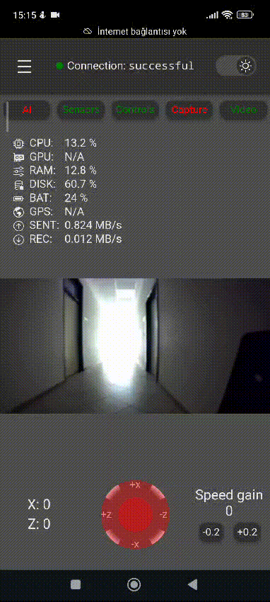
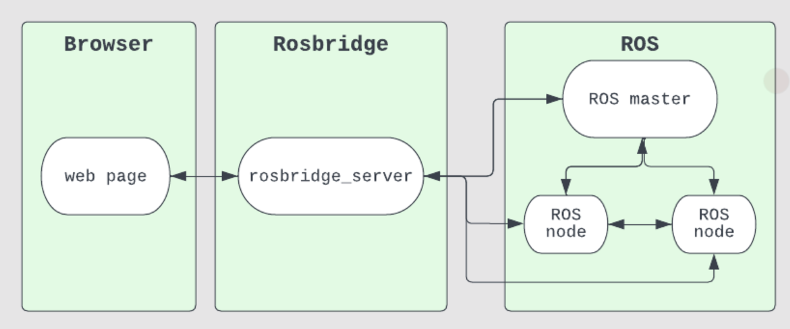
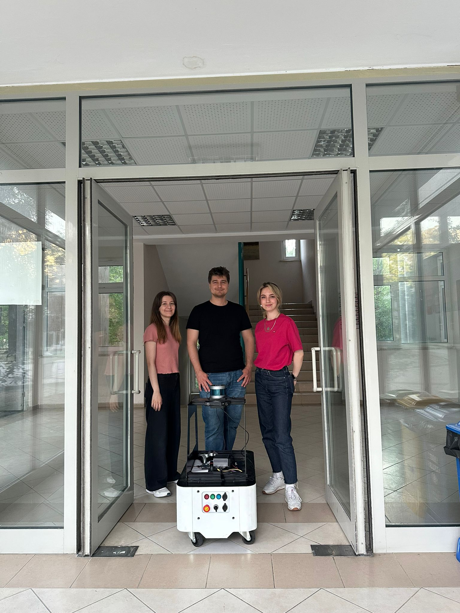
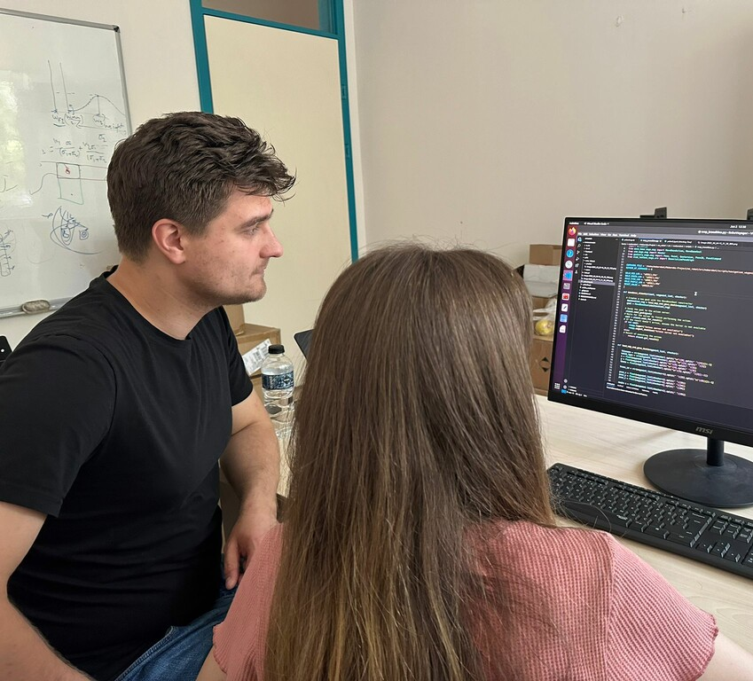
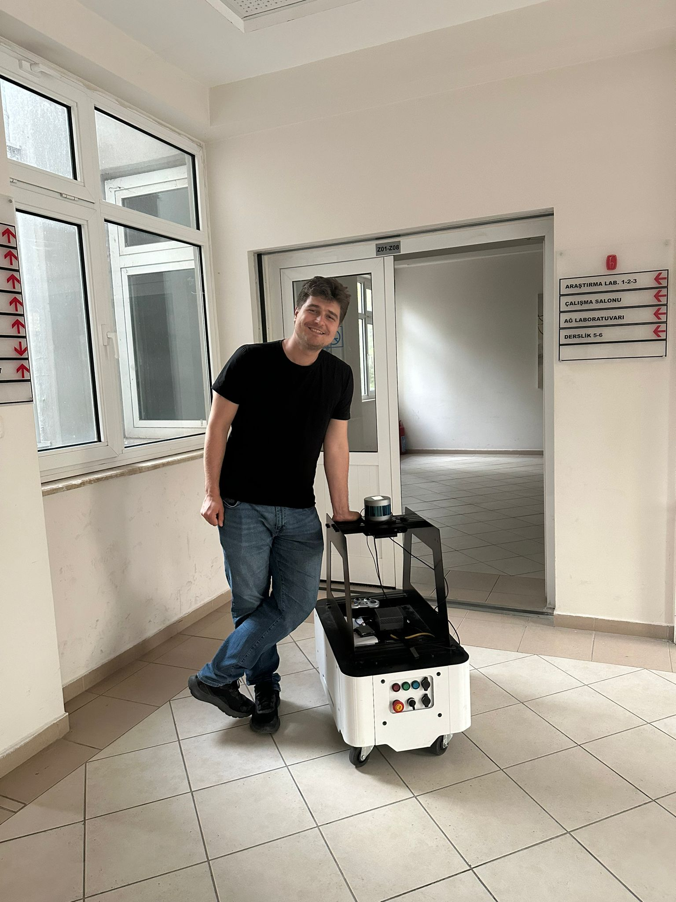
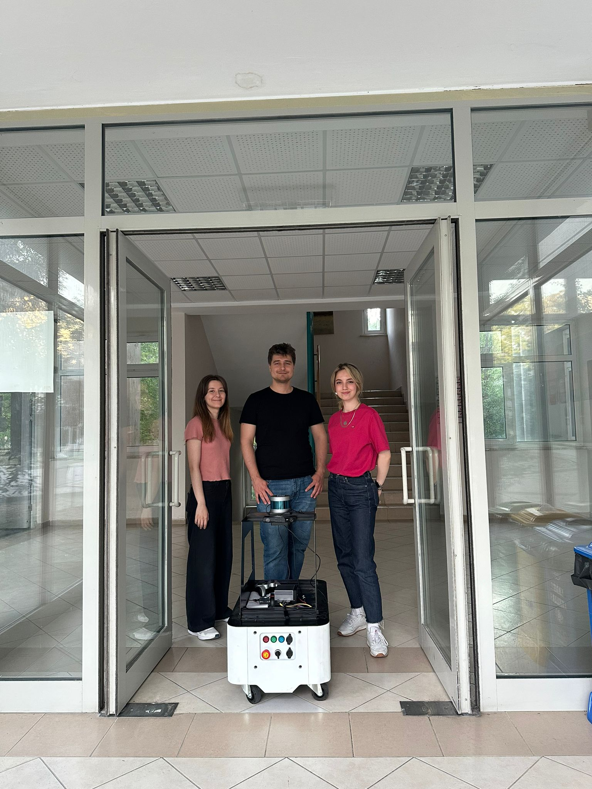
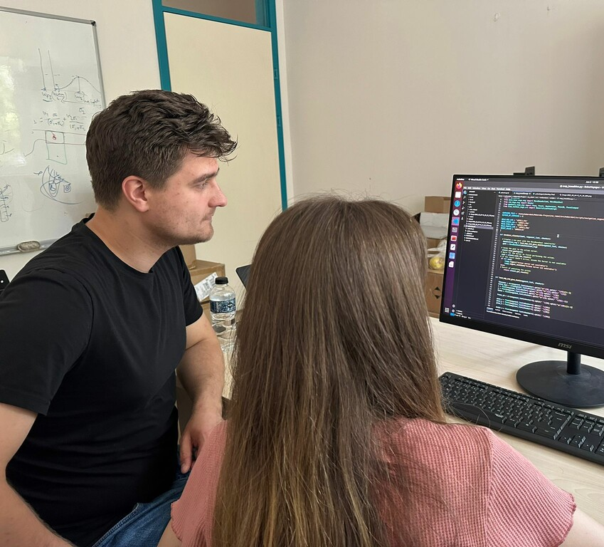
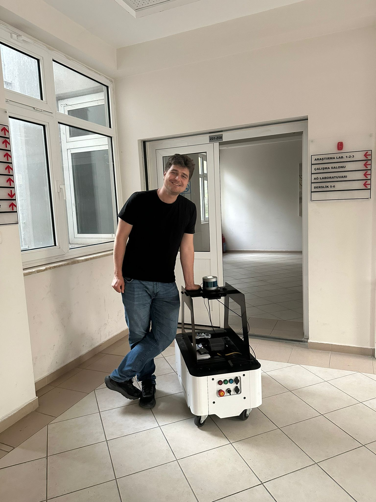

RoboVoyager
A website interface for robotic teleoperations
About
RoboVoyager is a website interface through which users can control a robot remotely. With the help of a virtual joystick, 8 different directions are possible. A video stream is provided to see where the robot is going. Naturally, the ability to monitor its sensors is important, such as battery level, CPU utilization, and GPS coordinates. While exploring the environment, capturing data from the camera, Lidar, and GPS, is easy at the press of a button. Additionally, to help highlight objects of interest, object detection and segmentation features are useful
How It Works
The interface communicates with the robot through Rosbridge. It does so through a WebSocket and subscribing/unsubscribing to Robot Operating System (ROS) topics. When a user turns on a feature such as video streaming, the website sends a request to subscribe to that topic and if it exists, ROS grants the request and transmits the data
These 3 parts can be separated and hosted from different machines, or
all of them can be hosted from the same machine (robot's computer) to
decrease the complexity and latency
Note that if running these parts on a LAN, the robot and devices have to be connected to the same network and the range depends on the wifi card's capabilities
Features
Controls
A virtual joystick is provided to remotely control the robot. It
sends a vector of movement to the robot by publishing it to the
/cmd_vel (command velocity) topic. There are 8 possible
directions, including moving diagonally. RoboVoyager is a
differential
robot, so one wheel's speed is "differentiated" from the other and
that's how it can rotate around and move in a curvy line
Video Streaming
While a user is controling a robot, the ability to see where it is
going is essential. Video streaming is offered at a low resolution
for faster viewing speed. Data is sent/downloaded only after a user
turns on
/video_streaming and subscribes to the topic
Sensors
Monitor sensor data of the robot. The most useful sensors are battery level, GPS, and network traffic for tracking the quality of the video
Data Saving
Saving data is easy at a press of a button. Possible to pause during recording, take multiple recordings. Data saver node collects information from Lidar, GPS, and Zed2 camera (but the camera has many more sensors inside it). Be cautious of prolonged use
Object Detection
While exploring the environemnt, highlighting points of interest is beneficial
Segmentation
Along with Object Detection feature, masks of recognized object can be highlighted as a secondary option
Videos
Gallery
 





Meet the Team

Aysu Aylin Kaplan
CE Student

Duygu Sena Öztürk
CE Student

Emir Masinovic
CE Student